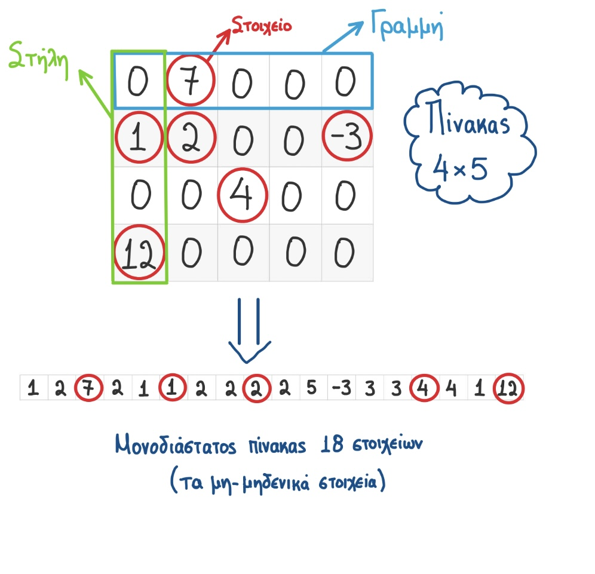
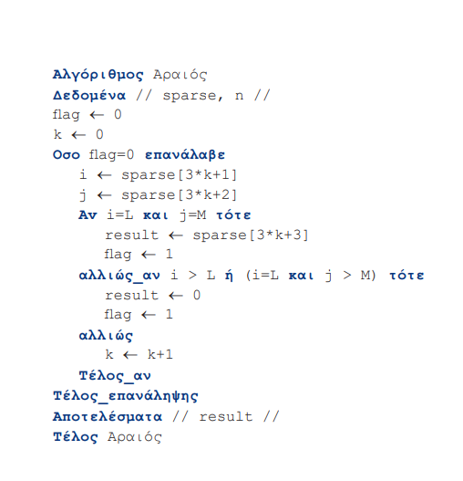

Ένας πίνακας λέγεται αραιός(sparse) όταν ένα μεγάλο ποσοστό των στοιχείων του(>80%) έχουν μηδενική τιμή.
Το πρόβλημα με τη διαχείριση των αραιών πινάκων είναι ότι δαπανάται πολύς χώρος για την αποθήκευση μηδενικών.
Άρα πρέπει να βρεθεί ένας οικονομικός τρόπος αποθήκευσης των αραιών πινάκων.
Ο επόμενος αλγόριθμος “Αραιός” επιστρέφει την τιμή του στοιχείου που βρίσκεται στη θέση < γραμμή Ι, στήλη m> του αρχικού πίνακα επεξεργαζόμενος τη νέα μορφή του πίνακα που αποτελείται από 3n θέσεις, όπου n ο αριθμός των μη μηδενικών στοιχείων.
* Αντλήθηκε από το τετράδιο μαθητή *